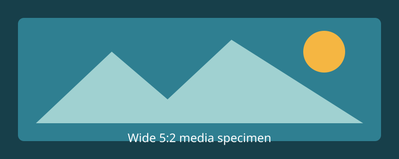

Card
Default surface
Neutral summary surface for settings, teasers, and basic grouping.
Default surface
Neutral summary surface for settings, teasers, and basic grouping.
Card-owned horizontal scroll
| Token | Editorial | Documentation | Application | Operating system |
|---|---|---|---|---|
| Component inline inset | Action | Action | Action | Action |
Emphasis surface
Adds weight without leaving the same spacing model.
Quiet grouping
Best used for metadata and supporting notes.

Captured preview
The image stays below an out-of-flow boundary.
Missing preview
The label retains its named self-painted boundary.